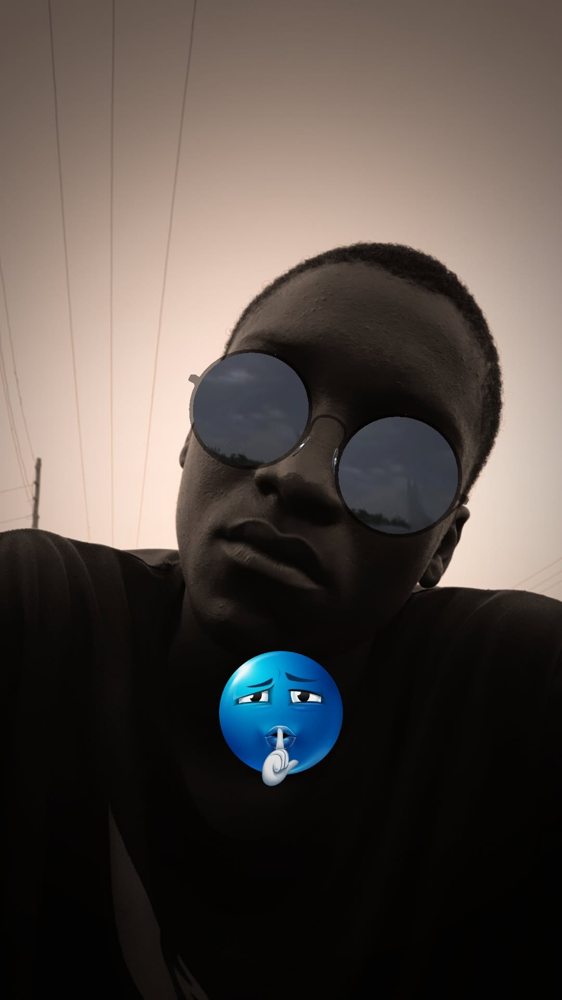

Also known as MB Fulany
My name is Abdullahi Bubafulani Musa, also known as MB Fulany. I was born on 17 September 2006.
I attended my nursery and primary school at Fathur Rahman Islamic Academy, Yola. I graduated from secondary school in 2022.
I obtained my first diploma at Adamawa State Polytechnic, Yola.
Primary School: Fathur Rahman Islamic Academy, Yola
Secondary School: Graduated in 2022
Diploma: Adamawa State Polytechnic, Yola
You can contact me by phone.
Call MeModibbo Adama Modern Market, opposite Hammawa Primary School, Yola.